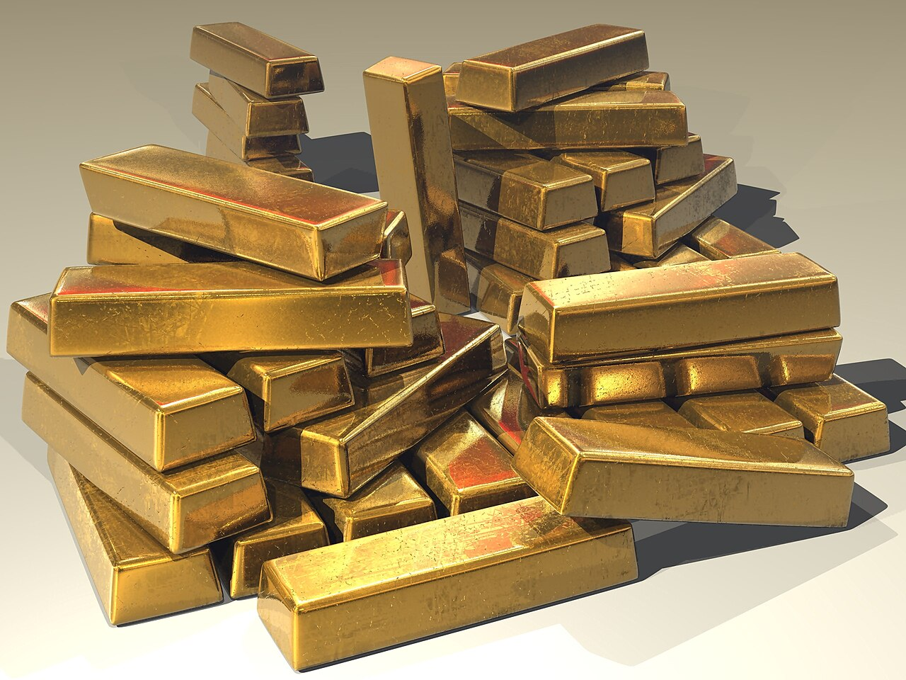
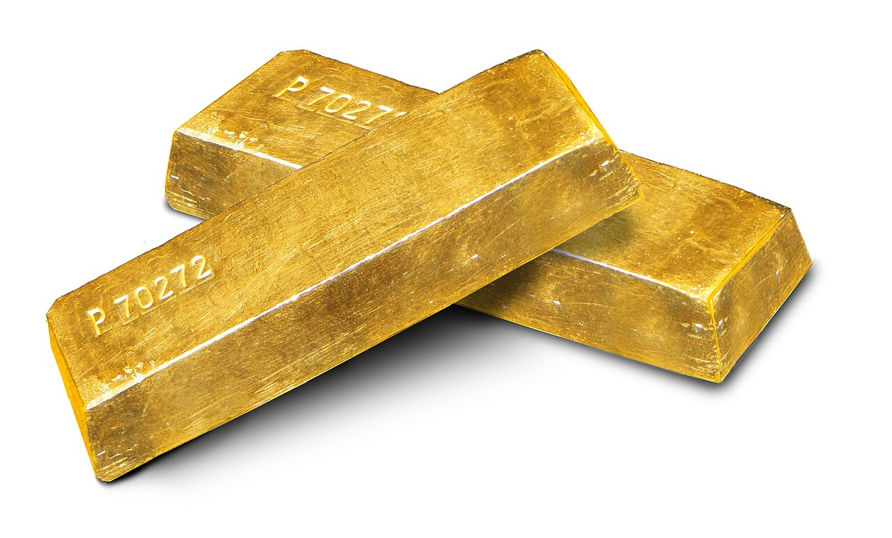
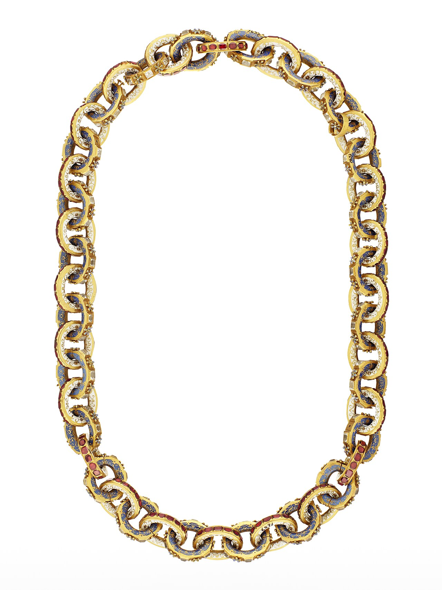
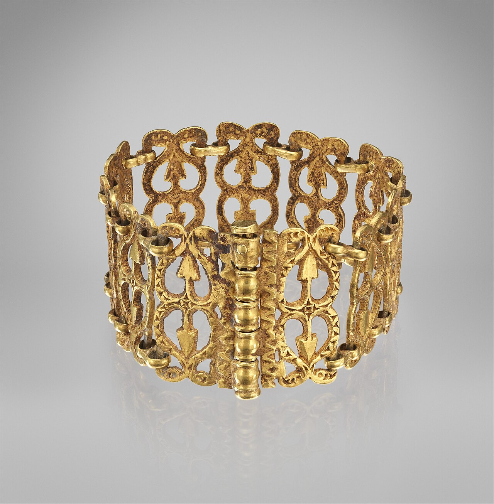
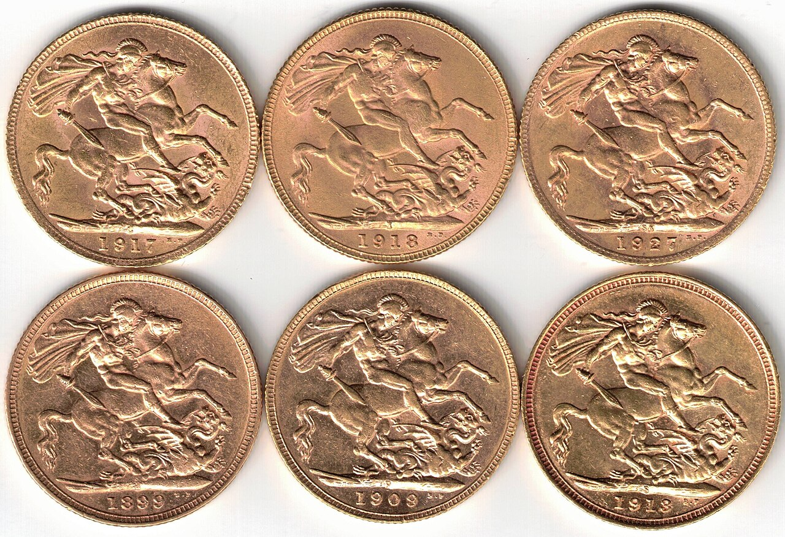
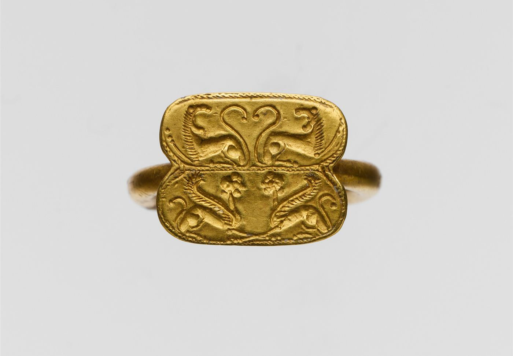
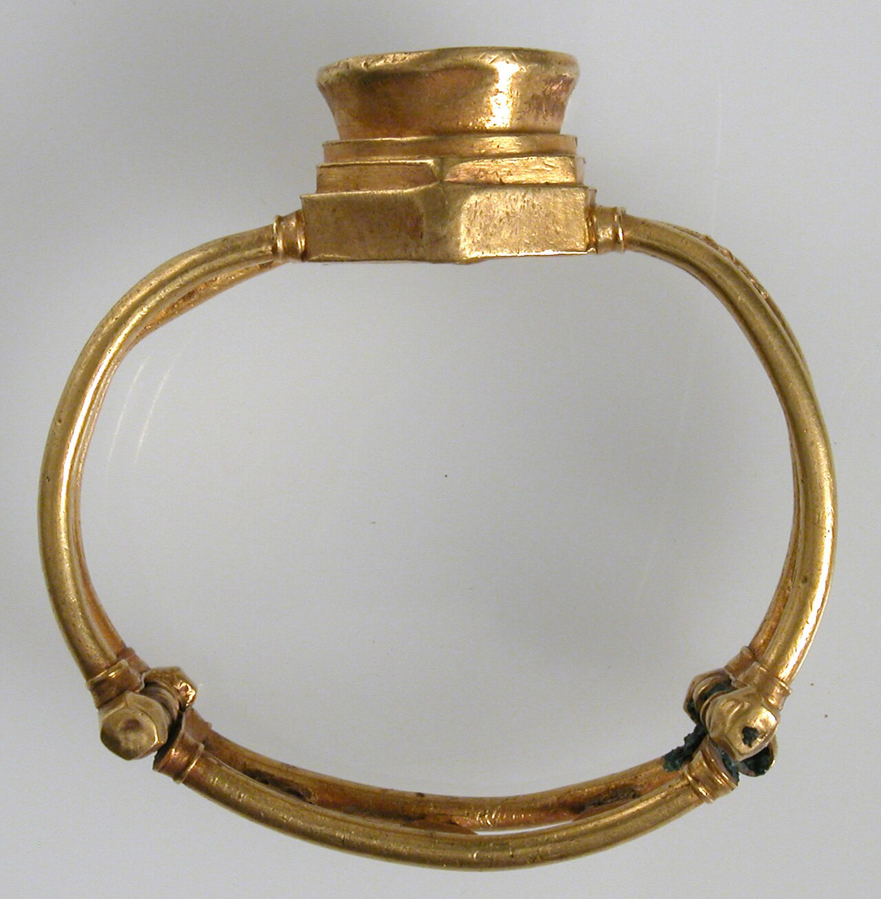
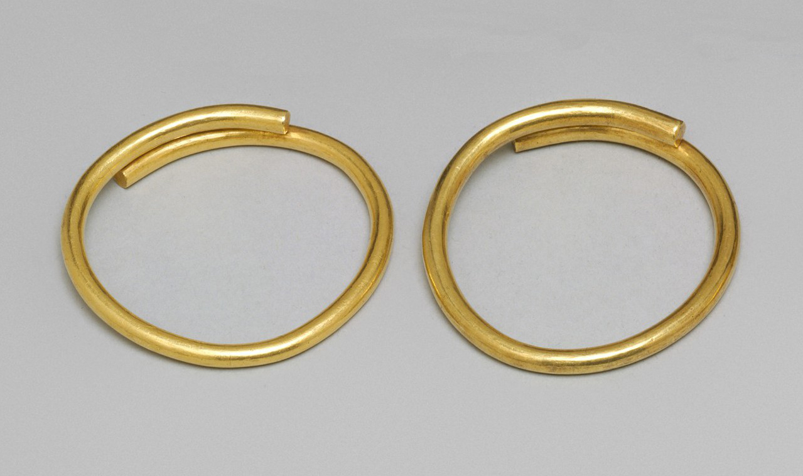

60代女性
終活の整理で定期的にお願いしています
そろそろ終活で持ち物の整理をと考えていましたが、どこで処分すればいいか迷っていました。お願いしてみたら金額も満足でき、何より店員さんの感じが良く、それ以来定期的にお願いしています。
貴金属買取
インゴットから、金・銀・パラジウム製品、金貨・銀貨まで。経験豊富な鑑定士が、目の前で丁寧に査定し、結果を分かりやすくご説明します。査定は無料です。






WORRIES
ITEMS

記載にないものでも、需要があれば査定いたします。写真はイメージです。
REASONS

経験豊富な鑑定士が、お客様の目の前で鑑定。結果を分かりやすくご説明します。
査定金額にご納得いただけたら、ご契約書へのサインのあと、その場で現金をお支払いします。
まとめての買取も可能です。他社では買い取らない物も、最低1円からでも買い取ります。
FLOW
本人確認書類(運転免許証など写真付きで有効期限内のもの)をお持ちください。18歳未満の方は原則お買取りできません。
船橋市・松戸市の2店舗で対応します。
ご自宅・社宅・オフィスへお伺いします。
写真で気軽に概算を。LINE公式アカウント:準備中
お品物を送って査定を受けられます。
VOICE

60代女性
そろそろ終活で持ち物の整理をと考えていましたが、どこで処分すればいいか迷っていました。お願いしてみたら金額も満足でき、何より店員さんの感じが良く、それ以来定期的にお願いしています。
使わなくなった金・銀・プラチナも、価値を見出し、大切に使ってくださる次の人へバトンを渡す。それが千両箱の役割です。
FAQ
SHOPS